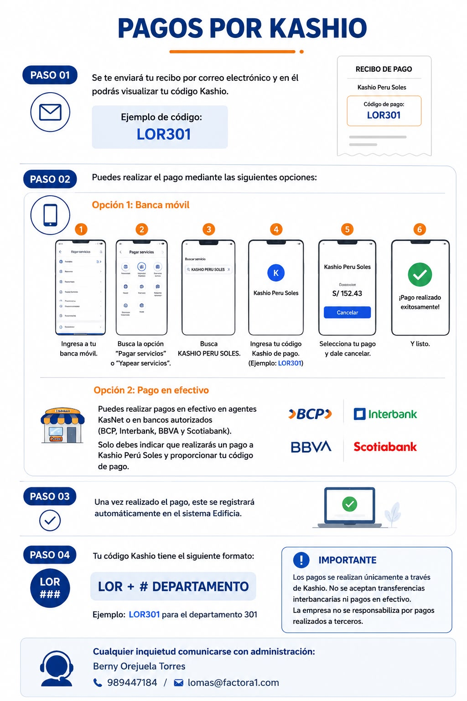

Pago de mantenimiento por Kashio
Referencia visual incorporada según el archivo enviado.

- Ingresar a la plataforma o enlace oficial de Kashio asignado al edificio.
- Validar el departamento, monto y periodo antes de confirmar.
- Realizar el pago dentro del vencimiento para evitar mora.
- Guardar la constancia para cualquier validación posterior con administración.